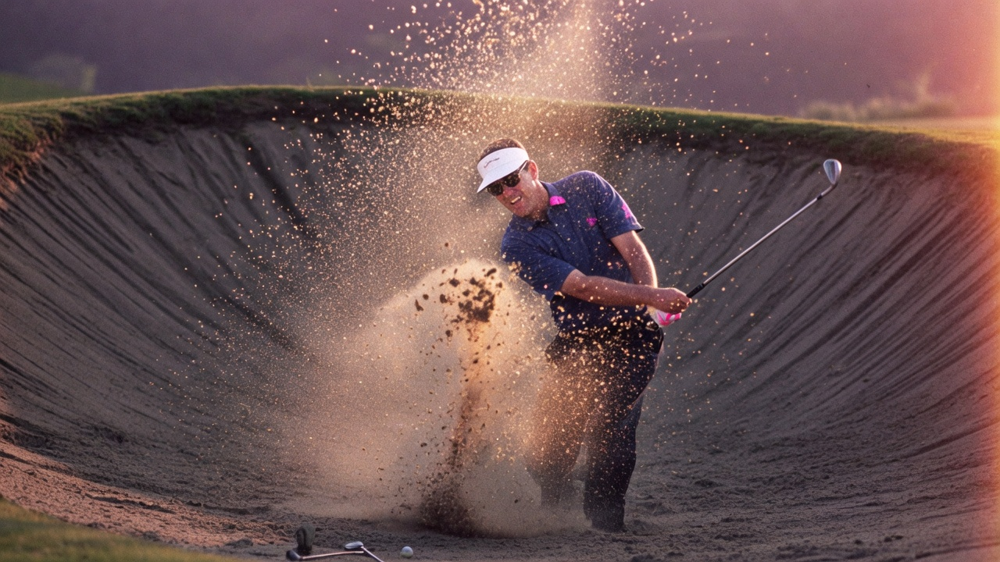
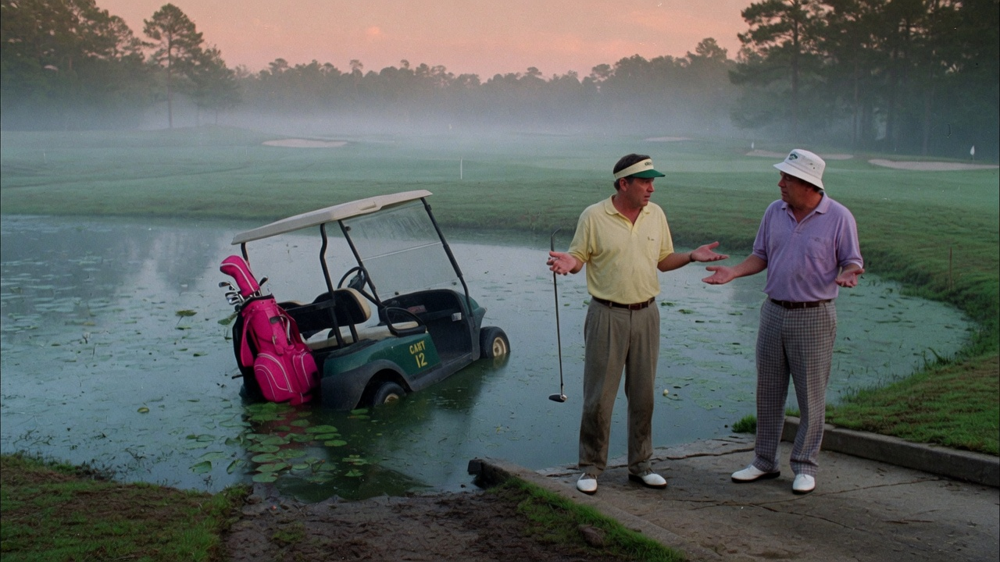
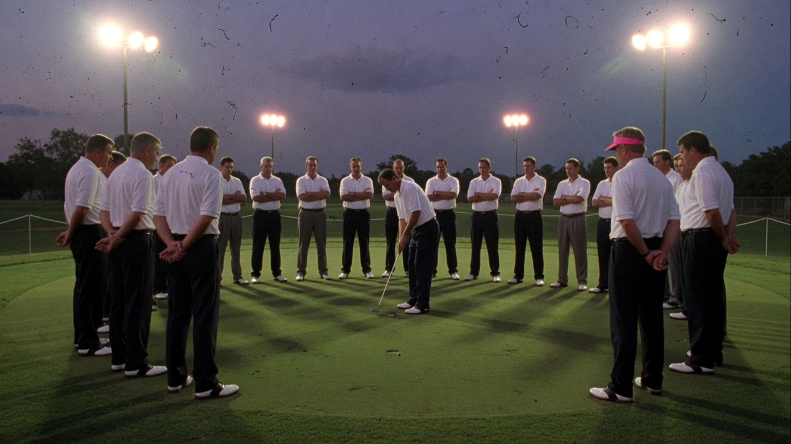
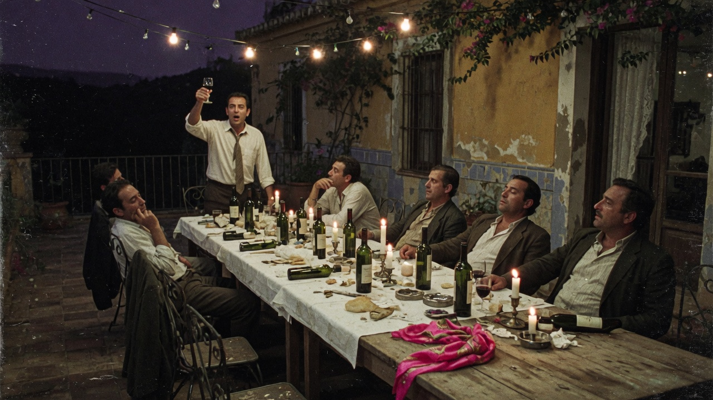
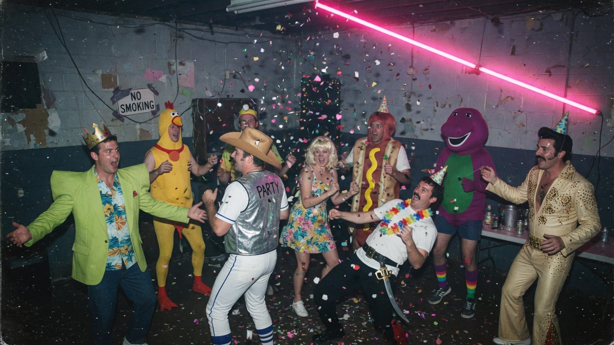

I am Jack’s small print. This dossier is not legally binding, except the part about the deposit (see Assignment IX).Dit dossier is juridisch niet bindend, met uitzondering van het gedeelte over de aanbetaling (zie Opdracht IX).
📅 29 Oct – 1 Nov 202629 okt – 1 nov 2026📍 El Rosario, Marbella East👥 8 members (1 waited 3 years on the porch)8 leden (1 stond 3 jaar op de stoep)📟 RSVP before Sep 1 — or the porch is yoursRSVP vóór 1 sep — anders sta jíj op de stoep🎭 Bring a ridiculous costume (rule 8b)Gek pak mee (regel 8b)🍺 Daytime drinking is the best time drinking
Assignment I — The Member RegistryOpdracht I — Het Ledenregister
ADMITTEDTOEGELATEN
🌙 By day they are their jobs. Click a member for his night shift.Overdag zijn ze hun baan. Klik op een lid voor zijn nachtdienst.
✊ In the basement:In de kelder:Bram, Derk, Marc & Samuel🚪 On the porch:Op de stoep:Treb, David, Peeg & Jaap
🚪 ON THE PORCH — DAY 3OP DE STOEP — DAG 3
⏳
Treb
The LeaderDe Leiding
Hands out agendas by day and rounds by night — with the same mild smile. Click twice to meet the man who sells the soap.Deelt overdag agenda’s uit en ’s nachts rondjes — met dezelfde milde glimlach. Klik twee keer: dan zie je wie de zeep verkoopt.
📄
“Found on the dance floor at 04:00 with a bottle in each hand. ‘Self-defence’, according to the suspect.”“Om 04:00 op de dansvloer aangetroffen met een fles in elke hand. ‘Zelfverdediging’, aldus de verdachte.”— police report, Marbella CID— proces-verbaal, Recherche Marbella
IN THE BASEMENT ✓IN DE KELDER ✓
⏳
Marc
The Inside Man — Head of Credit DestructionDe Inside Man — Hoofd Kredietvernietiging
Works in payment security by day. By night he plans the moment every balance drops to zero. Any argument about who paid what is therefore temporary.Doet overdag in payment security. ’s Nachts plant hij het moment waarop alle saldo’s op nul gaan. Discussies over wie wat betaald heeft zijn dus hoogstens tijdelijk.
📄
“Suspect demanded two-factor authentication for a round of beers. Case dismissed.”“Verdachte vroeg bij het rondje om tweefactorauthenticatie. Zaak geseponeerd.”— police report, Marbella CID— proces-verbaal, Recherche Marbella
IN THE BASEMENT ✓IN DE KELDER ✓
⏳
Derk
Space Monkey (name surrendered)Space monkey (naam ingeleverd)
Sauron in April, Voldemort in October, finally nameless in Marbella — in Project Mayhem, we have no names. For a man with his CV, that takes some getting used to.In april Sauron, in oktober Voldemort, in Marbella eindelijk naamloos — in Project Mayhem heb je geen naam. Voor een man met zijn cv is dat wennen.
📄
“Witnesses saw the nameless one applying SPF 50. ‘I’m pale, not stupid’, said an insider.”“Ooggetuigen zagen de naamloze factor 50 aanbrengen. ‘Ik ben bleek, niet dom’, aldus een ingewijde.”— police report, Marbella CID— proces-verbaal, Recherche Marbella
IN THE BASEMENT ✓IN DE KELDER ✓
⏳
Samuel
Bob — the heart of the clubBob — het hart van de club
The biggest hug in the society. Grows the raw materials on a freshly bought estate in Hengelo (Gld.) and brings his own pumpkins, because the Spanish ones are “frankly embarrassing”.De grootste omhelzing van het genootschap. Kweekt de grondstoffen op een vers aangekocht landgoed in Hengelo (Gld.) en neemt eigen pompoenen mee, want die Spaanse “stellen niks voor”.
📄
“His name is Samuel. His name is Samuel.” — the entire basement, in chorus— de hele kelder, in koor
🚪 ON THE PORCH — DAY 3OP DE STOEP — DAG 3
⏳
David
Angel Face, with moustacheAngel Face, mét snor
Too handsome for his own good; the leadership felt like destroying something beautiful, but the moustache is insured. In Florence ‘for work’ until Friday — the only city where the queues queue. He said he’d ‘see if he could cut it short’. The club is seeing right back.Te knap voor zijn eigen goed; de leiding wil af en toe iets moois vernietigen, maar de snor is verzekerd. Zit tot vrijdag ‘voor werk’ in Florence — de enige stad waar de rijen zelf in de rij staan. Hij zou ‘kijken of hij het kan inkorten’. De club kijkt terug.
📄
“Spotted on a piazza, staring at flights FLR→AGP. Florence will hear about this.”“Gesignaleerd op een piazza, turend naar vluchten FLR→AGP. Florence zal hiervan horen.”— police report, Marbella CID— proces-verbaal, Recherche Marbella
🚪 ON THE PORCH — DAY 3OP DE STOEP — DAG 3
⏳
Peeg
The ChemistDe Chemicus
In charge of lye, limoncello and the judgmental snap of the shaker. Probably unavailable this year — the reason has been seen by the club and approved without further questions.Verantwoordelijk voor loog, limoncello en het oordelend dichtslaan van de shaker. Dit jaar waarschijnlijk verhinderd — de reden is door de club gezien en zonder verdere vragen goedgekeurd.
📄
“Asked whether he wanted another beer, the Chemist simply replied: ‘Always.’”“Op de vraag of hij nog een biertje wilde, antwoordde de Chemicus slechts: ‘Always.’”— police report, Marbella CID— proces-verbaal, Recherche Marbella
IN THE BASEMENT ✓IN DE KELDER ✓
⏳
Bram
The NarratorDe Verteller
The Man Who Booked. Didn’t sleep for three weeks until the confirmation email landed. I am Bram’s deposit scar.De Man Die Boekte. Sliep drie weken niet tot de bevestigingsmail binnenkwam. I am Bram’s deposit scar.
📄
“The scar? The deposit, 2026. Everything else is marketing.”“Het litteken? De aanbetaling, 2026. De rest is marketing.”— police report, Marbella CID— proces-verbaal, Recherche Marbella
🚪 ON THE PORCH — DAY 3OP DE STOEP — DAG 3
⏳
Jaap 🎸
Lou — owner of the basement (with guitar)Lou — eigenaar van de kelder (mét gitaar)
Location manager for film & series. Kept rule one and rule two flawlessly for three years — he never talked about it. Turns out: he was a member all along. And the basement? He owns it.Locatiemanager voor film & series. Hield zich drie jaar foutloos aan regel één en twee — hij praatte er nooit over. Nu blijkt: hij was al die tijd lid. En de kelder? Die is van hem.
📄
“Years of ‘maybe’. Then a guitar solo tore through the basement: HE’S COMING.”“Jarenlang ‘misschien’. Toen scheurde er ineens een gitaarsolo door de kelder: HIJ GAAT MEE.”— police report, Marbella CID— proces-verbaal, Recherche Marbella
P. (Pascal) is exempt from basement duty: a small space monkey is expected at his house around departure day. Project Stork outranks Project Marbella. His barstool stays free. See Basement Trial II.P. (Pascal) is vrijgesteld van kelderdienst: rond de vertrekdatum wordt bij hem thuis een kleine space monkey verwacht. Project Ooievaar heeft voorrang op Project Marbella. Zijn kruk aan de bar blijft vrij. Zie Kelderproef II.
Marla exists in this reality too. Here she is called ‘the group chat’: shows up in every club, talks through everything, and yet we can’t live without her.Marla bestaat ook in deze realiteit. Zij heet hier ‘de groepsapp’: duikt op in elke club, praat overal doorheen, en toch kunnen we niet zonder haar.
I am Jack’s complete lack of surprise. The club accepts no liability for moustaches (art. 3, sub David), nor for cities with queues (art. 3a, sub Florence).De club is niet aansprakelijk voor snorren (art. 3, lid David), noch voor steden met rijen (art. 3a, lid Florence).
Assignment II — The Movement ProtocolOpdracht II — Het Verplaatsingsprotocol
ADMITTEDTOEGELATEN
“Move like you’re going nowhere. Arrive exactly on time.”
🇳🇱
Amsterdam
AMS → AGP
single-serving seat, gate D14
🇫🇷
Paris
CDG → AGP
single-serving friend included
🇩🇪
Munich
MUC → AGP
corridor East — talk to no onecorridor Oost — praat met niemand
🚗
The Back SeatDe Achterbank
AGP → El Rosario
just let go of the wheel (do not let go)laat het stuur los (doe dat niet)
🏛️
Florence
FLR → AGP
by Fri 30 Oct at the latest — direct orderuiterlijk vr 30 okt — dienstbevel
Eight men boarded an early flight. This is what the security camera remembers.Acht mannen stapten op een vroege vlucht. Dit is wat de bewakingscamera zich ervan herinnert.
CAM 04 · 29-10-2026 · 06:41:07
📼Rewinding the tape…De band wordt teruggespoeld…
🕶️ Treb — The LeaderDe Leiding
💳 Marc — The Inside Man
🐒 Derk — space monkey (nameless)space monkey (naamloos)
🫂 Samuel — Bob, the heart of the clubBob, het hart van de club
🪞 David — Angel Face (with moustache)Angel Face (mét snor)
🧪 Peeg — The ChemistDe Chemicus
🧾 Bram — The NarratorDe Verteller
🔑 Jaap — Lou, owner of the basementLou, eigenaar van de kelder
🎬 Footage confiscated with Grok Imagine | 📼 Tape: property of no one | 🧼 Soap: house-madeBeeldmateriaal in beslag genomen met Grok Imagine | 📼 Band: eigendom van niemand | 🧼 Zeep: eigen fabricaat
I am Jack’s jet lag. Memories of this journey may differ from reality, particularly after the Back Seat.Herinneringen aan deze reis kunnen afwijken van de werkelijkheid, in het bijzonder na de Achterbank.
Assignment III — The LodgingsOpdracht III — Het Onderkomen
I’d flip through the catalog and wonder: what kind of pool says something about me as a person? Then I just booked it. “Grand Villa with Amazing Golf & Sea View”, El Rosario: 4 dorms, 5 beds, 4.5 bathrooms (the half is for whoever gets KO’d first), panorama across the golf course, the sea, Gibraltar and — on clear days — Morocco and your own future. Walled and guarded: there is a man inside a barrier gate. House manager: Collin, fluent in Dutch.Ik bladerde door de catalogus en vroeg me af: welk zwembad zegt iets over mij als mens? Toen heb ik gewoon geboekt. “Grand Villa with Amazing Golf & Sea View”, El Rosario: 4 slaapzalen, 5 bedden, 4,5 badkamers (de halve is voor wie het eerst K.O. gaat), panorama over de golfbaan, de zee, Gibraltar en op heldere dagen Marokko én je eigen toekomst. Ommuurd en bewaakt — er zit een meneer in een slagboom. Huismeester: Collin, spreekt vloeiend Nederlands.
“The things you own end up owning you.” — fine. It has a private pool.prima. Het heeft een privézwembad.
VILLÄ MAYHEMentire house, sea view, does not officially existcompleet pand, zeezicht, bestaat officieel niet€ 0.- p.p.**deposit: see Bram’s scar*aanbetaling: zie Brams litteken
FRÜKOSTbreakfast terrace — ceiling replaced by seaontbijtterras — plafond vervangen door zee€ 12.95PÖÖL 8×4chlorine blue, merman-free, cannonball-certifiedchloorblauw, meermens-vrij, bommetje-gecertificeerd€ 89.-GRÏNDentrance gate — do not run through it, this wall is realtoegangspoort — ren er niet doorheen, de muur is écht€ 24.50SÖVDAL SouthZuiddorm — incl. cot for the first KOslaapzaal — incl. ledikantje voor de eerste K.O.€ 39.99DJUNGELSKÖGgarden path — banana trees, bougainvillea, no witnessestuinpad — bananenbomen, bougainville, geen getuigen€ 7.95HANDDÜK NorthNoorddorm — towels folded by Collinslaapzaal — handdoeken gevouwen door Collin€ 44.-
🏊
Private pool (this one does exist)Privézwembad (bestaat wél)
🛏️
4 dorms — complainers get the couch4 slaapzalen — wie moppert, krijgt de bank
5★ on Airbnb, 0★ from the homeowners’ association (noise complaints, category: guitar).5★ op Airbnb, 0★ van de vereniging van huiseigenaren (geluidsoverlast, categorie: gitaar).
I am Jack’s nesting instinct. The pool is not suitable for merpeople; it is suitable for men in their thirties yelling ‘cannonball’.Het zwembad is niet geschikt voor meermensen; wél voor mannen van in de dertig die ‘bommetje’ roepen.
Mandatory Therapy: The Eighteen Support Groups — Santa ClaraVerplichte Therapie: De Achttien Steungroepen — Santa Clara
ADMITTEDTOEGELATEN
Santa Clara Golf Marbella is minutes from the house — eighteen consecutive sharing circles with grass 🍺Santa Clara Golf Marbella ligt op een paar minuten van het pand — achttien kringgesprekken met gras 🍺
TREATMENT PLANBEHANDELPLAN
“Golf is not a sport. Golf is eighteen consecutive support groups. You stand in a circle, you share your feelings (‘left, into the bushes’), and medication drives around on four wheels. A birdie is a breakthrough. A ball in the water is a ball you have let go. And whenever the weather in Northern Europe is bad — so: always — the Beach Protocol takes effect automatically: daytime drinking on the beach, with a clear view of the rain radar back home. House rule of the club: Daytime drinking is the best time drinking (session 12.00–18.00).”“Golf is geen sport. Golf is achttien opeenvolgende steungroepen. Je staat in een kring, je deelt je gevoelens (‘links, de bosjes in’) en er rijdt medicatie rond op vier wielen. Wie een birdie slaat, heeft een doorbraak. Wie een bal het water in slaat, heeft hem losgelaten. En zodra het in Noord-Europa slecht weer is — dus: altijd — treedt automatisch het Strandprotocol in werking: daytime drinken op het strand, met zicht op de regenradar van thuis. Huisregel van de club: Daytime drinking is the best time drinking (zitting 12.00–18.00).”
🍺
The medication cartDe medicatiekar
“Comes by every 3 holes. More often if you share your feelings.”“Komt elke 3 holes langs. Vaker als je je gevoelens deelt.”
🏌️
The handicap systemHet handicapsysteem
“Your handicap is not a number, it’s a state of mind. It rises with every beer; that’s called acceptance.”“Je handicap is geen getal, het is een gemoedstoestand. Hij stijgt met elk biertje; dat heet acceptatie.”
🧼
Hole 12 — the trunkHole 12 — de kofferbak
“At hole 12 a man sells soap out of a car trunk. Buy. The. Soap.”“Bij hole 12 verkoopt een man zeep uit een kofferbak. Koop. De. Zeep.”



archive footage and exhibits: the medication cart timetable, the bunker incident, the cart-in-the-pond affair and the silent circle at hole 9 (source: the soap guy)archiefbeelden én bewijsstukken: de dienstregeling van de medicatiekar, het bunkerincident, de kar-in-de-vijver-kwestie en de stille kring bij hole 9 (bron: de man van de zeep)
Santa Clara is next to the house, so the walk back is theoretically doable. Theoretically.Santa Clara ligt naast het pand. De terugweg is dus theoretisch lopend te doen. Theoretisch.
I am Jack’s rising handicap. Bogeys don’t count if struck with a cerveza in the other hand (art. 19).Bogeys tellen niet indien geslagen met een cerveza in de andere hand (art. 19).
Assignment V — Homework: MarbellaOpdracht V — Huiswerk: Marbella
RECOMMENDEDAANBEVOLEN
Nine homework assignments for a society of eight. Everything within 20 minutes of El Rosario. Hand-in: Monday, in your head.Negen huiswerkopdrachten voor een genootschap van acht. Alles binnen 20 minuten van El Rosario. Inleveren: maandag, in je hoofd.
🏖️ Beach clubsStrandtenten
HOMEWORK 1🐟
Bono’s Beach
“Start where you will end: practically the house bar, on your own beach. Espetos, cocktails, sea.”“Begin waar je gaat eindigen: praktisch de huisbar, aan jullie eigen strand. Espetos, cocktails, zee.”
HOMEWORK 2🍾
Nikki Beach
“Order the champagne. Lose the fight with the bill. Book ahead, gentlemen — this is not a chiringuito.”“Bestel de champagne. Verlies het gevecht met de rekening. Reserveren, heren — dit is geen chiringuito.”
HOMEWORK 3🥂
La Plage Casanis & Trocadero Playa
“Stretch lunch until it becomes dinner. A sense of time is a possession; let it go. Feet in the sand.”“Rek de lunch op tot het diner. Tijdsbesef is een bezitting; laat het los. Voeten in het zand.”
🌃 After sundownNa zonsondergang
HOMEWORK 4🍊
Casco Antiguo
“Tapas-crawl to Plaza de los Naranjos. Start a conversation with a stranger. Lose it.”“Tapas-crawl tot aan Plaza de los Naranjos. Begin een gesprek met een vreemde. Verlies het.”
HOMEWORK 5🛥️
Puerto Banús
“First inspect the superyachts (do not buy one, Marc), then the clubs. Whatever happens after that falls under rule one.”“Eerst superjachten keuren (niet kopen, Marc), daarna de clubs. Wat daarna gebeurt, valt onder regel één.”
HOMEWORK 6🎰
Casino Marbella
“The Soap Fund in reverse: here you pay in. The Inside Man supervises and approves nothing.”“Het omgekeerde Zeepfonds: hier lever je juist ín. De Inside Man houdt toezicht en keurt niets goed.”
🎯 For the groupVoor de groep
HOMEWORK 7🎾
Padel & tennis in El RosarioPadel & tennis in El Rosario
“There’s a tennis club at the bottom of the urbanisation — it’s literally in the listing. Losers sponsor the medication cart.”“Onderaan de eigen urbanisatie ligt een tennisclub — staat letterlijk in de listing. Verliezers sponsoren de medicatiekar.”
HOMEWORK 8⛵
Rent a boat or jet skiBoot of jetski huren
“Along the coast from Puerto Banús. Captain Samuel has documented seafaring experience (exhibit: the member registry).”“Vanuit Puerto Banús de kust langs. Kapitein Samuel heeft aantoonbare vaarervaring (bewijsstuk: het ledenregister).”
HOMEWORK 9🐒
Day trip to GibraltarDagexcursie Gibraltar
“Visit the apes. If one steals your sunglasses, that is not theft — that is letting go.”“Bezoek de apen. Als er één je zonnebril steelt, is dat geen diefstal — dat is loslaten.”
I am Jack’s wallet. The club is not responsible for reservations, hangovers or impulsively purchased yachts.De club is niet verantwoordelijk voor reserveringen, katers of impulsief aangeschafte jachten.
Assignment IV — The PlaybookOpdracht IV — Het Draaiboek
ADMITTEDTOEGELATEN
Four days. Attendance is mandatory. Especially the sessions.Vier dagen. Aanwezigheidsplicht. Vooral bij de zittingen.
THU 29 OCT — “The First Night”DO 29 OKT — “De Eerste Nacht”
“Gate D14, Schiphol. Eight men, one assignment. Talk to no one about the assignment.”“Gate D14, Schiphol. Acht man, één opdracht. Praat met niemand over de opdracht.”
“The Back Seat: AGP → El Rosario. Just let go of the wheel. (Do not let go of the wheel.)”“De Achterbank: AGP → El Rosario. Just let go of the wheel. (Laat het stuur niet los.)”
“First cerveza on Spanish soil. Tradition. No discussion.”“Eerste cerveza op Spaanse bodem. Traditie. Geen discussie.”
“Room allocation by the rules of the basement: complainers get the couch. Double complainers get the cot.”“Kamerverdeling volgens de regels van de kelder: wie moppert, krijgt de bank. Wie twee keer moppert, het ledikantje.”
“First dive into PÖÖL 8×4.”“Eerste duik in PÖÖL 8×4.”
“Opening session at the BBQ. The flames belong to Samuel. Only to Samuel.”“Openingszitting aan de BBQ. De vlammen zijn van Samuel. Alleen van Samuel.”
“First chemistry class — lecturer: The Chemist. ‘It’s not mixing. It’s science.’”“Eerste les chemie — docent: De Chemicus. ‘It’s not mixing. It’s science.’”
“Video call with Florence. We show the pool. He shows a queue.”“Videoverbinding met Florence. Wij tonen het zwembad. Hij toont een rij.”
FRI 30 OCT — “The Eighteen Support Groups”VR 30 OKT — “De Achttien Steungroepen”
“Tee-off Santa Clara. Session one is in session.”“Tee-off Santa Clara. Zitting één geopend.”
“First contact with the medication cart.”“Eerste contact met de medicatiekar.”
“Halfway house — the support group at the halfway point. Everyone shares something.”“Halfway house — de steungroep halverwege. Iedereen deelt iets.”
“David lands from Florence. The assignment was clear.”“Aankomst David uit Florence. De opdracht was helder.”
“Podium ceremony at the pool. The winner does not talk about it (rule one).”“Podiumceremonie bij het zwembad. De winnaar zwijgt erover (regel één).”
“Excursion Puerto Banús. Wallet detachment recommended.”“Excursie Puerto Banús. Portemonnee-ontkoppeling aanbevolen.”
Treatment advice from the club: hydration is key. 🍺Behandeladvies van de club: Hydrateren is key. 🍺
ZA 31 OKT — 🎃 “PROJECT HALLOWEEN” 🎃
“Sleeping in, by club decree.”“Uitslapen krachtens clubbesluit.”
“Pumpkin carving with the precision of a soap cutter — led by Samuel, using his own Hengelo harvest.”“Pompoenen snijden met de precisie van een zeepsnijder — o.l.v. Samuel, met eigen oogst uit Hengelo (Gld.).”
“Costume duty in effect. Directive: dress as your alter ego, or as something scarier — a Tikkie request, for example.”“Kostuumplicht van kracht. Voorschrift: verkleed als je alter ego, of als iets engers — een Tikkie-verzoek bijvoorbeeld.”
“THE HALLOWEEN BALL at the house. No costume = 50 credits deducted and you buy the first round. Trophy for the Worst Dressed Member.”“HET HALLOWEEN-BAL in het pand. Geen kostuum = 50 tegoed aftrek én je koopt de eerste ronde. Bokaal voor het Slechtst Verklede Lid.”
“OUT OF THE BASEMENT — general evacuation toward the nightlife.”“DE KELDER UIT — algemene evacuatie richting nachtleven.”
🎭 Bring a ridiculous costume — no costume, no ball. After-ball: location TBD (La Suite, Olivia Valere, Pangea or Mosh). Preference? Report it to the Complaints Desk. 📟Gek pak mee — zonder kom je het bal niet in. Na-bal: locatie TBD (La Suite, Olivia Valere, Pangea of Mosh). Voorkeur? Meld het bij het Meldpunt. 📟
Halloween on a Saturday. This is not a schedule, this is the plan.Halloween op zaterdag. Dit is geen planning, dit is het plan.
SUN 1 NOV — “The Morning After”ZO 1 NOV — “De Ochtend Erna”
“Support group ‘Men Among Men’ — circle around the brunch table. Everyone may share. Nobody does.”“Steungroep ‘Mannen Onder Elkaar’ — kring om de brunchtafel. Iedereen mag iets delen. Niemand doet het.”
“Final round of PÖÖL + Brunch of the Survivors — it is All Souls’ Day, after all: we honour our brain cells. His name was Robert Paulson.”“Laatste rondje PÖÖL + Brunch der Overlevenden — het is tenslotte Allerzielen: wij herdenken onze hersencellen. His name was Robert Paulson.”
“The house closes. Journey home.”“Het pand sluit. Terugreis.”
“Home. You do not talk about it.”“Thuis. Je praat er niet over.”
I am Jack’s calendar. Changes reserved to the leadership and its second glass.Wijzigingen voorbehouden aan de leiding en diens tweede glas.
🥊 The Basement TrialsDe Kelderproeven
ADMITTEDTOEGELATEN
Six trials. Nobody is watching. Everybody is watching. Prove your admission was deserved.Zes proeven. Niemand kijkt. Iedereen kijkt. Bewijs dat je toelating terecht was.
MAYHEM
🧼 Your Mayhem credit:Jouw Mayhem-tegoed:0 — Tourist
Basement Trial I · Rhetoric · Location: the basement, on a crateKelderproef I · Retoriek · Locatie: de kelder, op een krat
🗣️ The SpeechDe Toespraak
The Leader addresses the basement. Every line has to land. Stop the needle inside the pink zone — dead centre is a breakthrough. Miss three times and the basement loses faith.De Leiding spreekt de kelder toe. Elke zin moet landen. Stop de naald in de roze zone — precies in het midden is een doorbraak. Drie missers en de kelder verliest het geloof.
🕶️📦
TAP (or press space) when the needle is on targetTIK (of druk op spatie) als de naald raak zit
1 / 8🔥🔥🔥0
🗣️📦🍺
The basement is waiting. Speak.De kelder wacht. Spreek.
Stop the needle in the pink zone: hit = +10, dead centre = +15.Stop de naald in de roze zone: raak = +10, het exacte midden = +15.
⚠️ Miss three times and you’re just a man on a crate.⚠️ Drie missers en je bent gewoon een man op een krat.
👆 Tap to start · 8 lines👆 Tik om te beginnen · 8 zinnen
ADMITTED
–
RESULT · BASEMENT TRIAL I · RHETORICUITSLAG · KELDERPROEF I · RETORIEK
Basement Trial II · Self-knowledge · Location: the parking lotKelderproef II · Zelfkennis · Locatie: de parkeerplaats
🥊 Fight YourselfVecht met Jezelf
The Narrator fights in the parking lot. Against himself. Your mirror image demonstrates a combination — repeat it exactly. Each round adds one punch. Three mistakes and you have lost to yourself. (You also win against yourself. It’s complicated.)De Verteller vecht op de parkeerplaats. Tegen zichzelf. Jouw spiegelbeeld doet een combinatie voor — doe hem exact na. Elke ronde wordt de combinatie één klap langer. Drie fouten en je hebt van jezelf verloren. (Je wint ook van jezelf. Het is ingewikkeld.)
🧍vs🧍
1🦷🦷🦷0
🥊🪞🥊
You cannot win this. Try anyway.Je kunt dit niet winnen. Probeer het toch.
Watch the combination, repeat it exactly. Each round +1 punch.Kijk de combinatie af, doe hem exact na. Elke ronde +1 klap.
⚠️ Three mistakes = knocked out (by yourself).⚠️ Drie fouten = knock-out (door jezelf).
👆 Tap to start👆 Tik om te beginnen
ADMITTED
–
RESULT · BASEMENT TRIAL II · SELF-KNOWLEDGEUITSLAG · KELDERPROEF II · ZELFKENNIS
Basement Trial III · Chemistry · Location: the Chemist’s basement kitchenKelderproef III · Chemie · Locatie: de kelderkeuken van de Chemicus
🧼 The Soap WorksDe Zeepziederij
The Chemist runs the night shift. Scoop ripe soap 🧼 from the vats, tap the rats 🐀 away — but the moment lye ⚗️ splashes: gloves on FIRST, or it burns. It’s your pain. It’s your burning hand.De Chemicus draait nachtdienst. Schep rijpe zeep 🧼 uit de kuipen, tik ratten 🐀 weg — maar zodra er loog ⚗️ opspat: éérst de handschoenen aan, anders brandt het. It’s your pain. It’s your burning hand.
🧪
45 s0
🧼🐀⚗️
The night shift begins. Gloves?De nachtdienst begint. Gloves?
Tap soap 🧼 (+25) and rats 🐀 within 1.2 s (+15).Tik zeep 🧼 (+25) en ratten 🐀 binnen 1,2 s (+15).
⚠️ Quench lye ⚗️ ONLY with gloves on (+20) — without, it costs −15 and a scar. The gloves slip off by themselves after 6 s.⚠️ Loog ⚗️ alléén blussen mét handschoenen (+20) — zonder kost het je −15 en een litteken. De handschoenen zakken na 6 s vanzelf af.
👆 Tap to start · 45 s👆 Tik om te beginnen · 45 s
ADMITTED
–
RESULT · BASEMENT TRIAL III · CHEMISTRYUITSLAG · KELDERPROEF III · CHEMIE
Basement Trial IV · Credit Destruction · Location: the Inside Man’s officeKelderproef IV · Kredietvernietiging · Locatie: het kantoor van de Inside Man
💳 Project Debt-FreeProject Schuldvrij
Tonight the balances go to zero. But not all of them: group debts you ERASE; the club fee, the deposit and anything you owe the club, you KEEP. The Inside Man makes no mistakes. You do.Vannacht gaan de saldo’s op nul. Maar niet állemaal: schulden van de groep WIS je; het clubgeld, de aanbetaling en alles wat jíj de club schuldig bent BEWAAR je. De Inside Man maakt geen fouten. Jij wel.
TRANSACTION #001
40 sstreak: 00
💳🗑️🔒
The servers are ours. 40 seconds.De servers zijn van ons. 40 seconden.
Group debt? 🗑️ ERASE (+10). Club fee, deposit or your own debt? 🔒 KEEP (+10).Schuld van de groep? 🗑️ WISSEN (+10). Clubgeld, aanbetaling of jouw eigen schuld? 🔒 BEWAREN (+10).
⚠️ Wrong = −10. A streak of 5 = bonus.⚠️ Fout = −10. Een reeks van 5 = bonus.
👆 Tap to start · 40 s👆 Tik om te beginnen · 40 s
ADMITTED
–
RESULT · BASEMENT TRIAL IV · CREDIT DESTRUCTIONUITSLAG · KELDERPROEF IV · KREDIETVERNIETIGING
Basement Trial V · Patience · Location: the porch outside the basementKelderproef V · Geduld · Locatie: de stoep voor de kelder
🚪 The Porch WatchDe Stoepwacht
To join, you stand on the porch for three days. Without food. Without encouragement. When the door opens, you step in immediately — move too early or knock, and you start over at day one. Jaap took three years; you get to try it in three days.Wie lid wil worden, staat drie dagen op de stoep. Zonder eten. Zonder aanmoediging. Als de deur opengaat, stap je onmiddellijk naar binnen — wie te vroeg beweegt of aanklopt, begint opnieuw bij dag één. Jaap deed er drie jaar over; jij mag het in drie dagen proberen.
NO ENTRY
🧍
1 / 30
🚪🧍⏳
Stand on the porch. Wait.Ga op de stoep staan. Wacht.
Tap the door the instant it swings open — the faster, the more points.Tik op de deur zodra hij openzwaait — hoe sneller, hoe meer punten.
⚠️ Tapping early is knocking. Knocking is day one.⚠️ Te vroeg tikken is aankloppen. Aankloppen is dag één.
👆 Tap to start · 3 days👆 Tik om te beginnen · 3 dagen
ADMITTED
–
RESULT · BASEMENT TRIAL V · PATIENCEUITSLAG · KELDERPROEF V · GEDULD
Basement Trial VI · Escapology · Location: Florence, queues everywhereKelderproef VI · Ontsnappingskunde · Locatie: Florence, overal rijen
🏛️ Escape from FlorenceVlucht uit Florence
David must land at AGP before Friday 16:00. Between him and the gate: queues 🧍, selfie sticks 🤳 and roller suitcases 🛄. Switch lanes (tap left/right or use the arrow keys), grab boarding passes 🎫 and espresso ☕ — and make the flight.David moet vóór vrijdag 16:00 op AGP landen. Tussen hem en de gate: rijen 🧍, selfiesticks 🤳 en rolkoffers 🛄. Wissel van baan (tik links/rechts of gebruik de pijltjes), pak boardingpassen 🎫 en espresso ☕ — en haal de vlucht.
🕺
45 s👨🏼👨🏼👨🏼0
🏛️🤳🎫
The assignment was clear: Friday. Four p.m.De opdracht was helder: vrijdag. Zestien uur.
Dodge queues 🧍, selfie sticks 🤳 and suitcases 🛄. Grab 🎫 (+15) and ☕ (+10).Ontwijk rijen 🧍, selfiesticks 🤳 en koffers 🛄. Pak 🎫 (+15) en ☕ (+10).
⚠️ Three collisions and you’re at the back of the queue again. In Florence, that means: forever.⚠️ Drie botsingen en je staat weer achteraan. In Florence betekent dat: voorgoed.
👆 Tap to start · 45 s👆 Tik om te beginnen · 45 s
ADMITTED
–
RESULT · BASEMENT TRIAL VI · ESCAPOLOGYUITSLAG · KELDERPROEF VI · ONTSNAPPINGSKUNDE
Credit is stored in your own browser’s basement ledger. The club is not watching. The club already knows.Tegoed wordt opgeslagen in de kelderadministratie van je eigen browser. De club kijkt niet mee. De club weet het toch al.
I am Jack’s hand-eye coordination. Losing is also a form of letting go.Verliezen is ook een vorm van loslaten.
🍻 The BasementDe Kelder
DOES NOT EXISTBESTAAT NIET
After the basement, the volume on the rest of your life is turned down. What eight gentlemen around forty need: a cold beer, a glowing BBQ, one long table, a pool to float in and one night that gets out of hand.Na de kelder staat het volume van de rest van je leven zachter. Wat acht heren van rond de veertig nodig hebben: een koude pils, een gloeiende BBQ, een lange tafel, een zwembad om in te hangen en één avond die uit de hand loopt.

Pool floating — the only club activity with zero injury riskZwembad-hangen — het enige clubonderdeel zonder blessurerisico
Pool floating — the only club activity with zero injury riskZwembad-hangen — het enige clubonderdeel zonder blessurerisico
The BBQ — Samuel decides when the meat is done. Nobody else.De BBQ — Samuel bepaalt wanneer het vlees klaar is. Niemand anders.
Pool games after beer six — someone always ends up in the waterZwembadspelletjes na bier zes — er eindigt altijd iemand in het water
Cocktail hour at the beach bar — ‘just one more’ is legally bindingCocktailuur aan de strandbar — ‘nog ééntje dan’ is juridisch bindend
Golf at Santa Clara — the handicap rises per hole, the mood per medication cartGolf op Santa Clara — de handicap stijgt per hole, het humeur per medicatiekar
📷 The dinner — David’s speech is now twenty minutes in and nobody intervenesHet diner — Davids speech duurt inmiddels twintig minuten en niemand grijpt in

📷 Saturday night — eight ridiculous costumes, one basement, zero witnessesZaterdagnacht — acht gekke pakken, één kelder, nul getuigen
Images for illustration purposes. Reality will be blurrier, but real.Beelden ter illustratie. De werkelijkheid wordt waziger, maar wél echt.
I am Jack’s memory loss. What happens in the basement stays in the basement. Except on these tapes.Wat er in de kelder gebeurt, blijft in de kelder. Behalve op deze beelden.
🎥 The Midnight ScreeningsDe Nachtvoorstellingen
AFTER MIDNIGHTNA MIDDERNACHT
Six screenings, run by a projectionist who splices frames in between. No titles are named — guess one and you’re excused from buying a round.Zes voorstellingen, gedraaid door een projectionist die er frames tussen plakt. Titels worden niet genoemd — wie hem raadt, hoeft geen rondje te halen.
I
“The Sunday brunch is that way. Straight through the storm. WITNESS.”“De zondagbrunch is die kant op. Dwars door de storm. WITNESS.”
🎞️ For those who truly don’t recognise itVoor wie hem écht niet herkent
“Same wasteland, 36 years earlier. A man in a leather jacket, a V8, and the last sane cop on the road. The Back Seat protocol is loosely based on this.”“Dezelfde woestenij, 36 jaar eerder. Een man in een leren jack, een V8, en de laatste normale agent op de weg. Het Achterbank-protocol is hier losjes op gebaseerd.”
🎞️ For those who truly don’t recognise itVoor wie hem écht niet herkent
“Blue pill: you wake up and believe whatever you want to believe. Red pill: you see how deep the rabbit hole goes. This website has the exact same front door.”“Blauwe pil: je wordt wakker en gelooft wat je geloven wilt. Rode pil: je ziet hoe diep het konijnenhol gaat. Deze website heeft exact dezelfde voordeur.”
🎞️ For those who truly don’t recognise itVoor wie hem écht niet herkent
“That rug really tied the room together. Our room is tied together by a pool. Otherwise we, like him, remain very calm.”“That rug really tied the room together. Onze kamer wordt bijeengehouden door een zwembad. Verder blijven wij, net als hij, héél kalm.”
🎞️ For those who truly don’t recognise itVoor wie hem écht niet herkent
“Choose a job. Choose a career. Choose a mortgage. Choose an enormous television. Or choose one weekend in Marbella and let the rest wait.”“Choose a job. Choose a career. Choose a mortgage. Kies een enorme televisie. Of kies één weekend Marbella en laat de rest even staan.”
🎞️ For those who truly don’t recognise itVoor wie hem écht niet herkent
“He makes you an offer you can’t refuse. We have a word for that too: a Tikkie.”“Hij doet je an offer you can’t refuse. Wij hebben daar ook een woord voor: een Tikkie.”
🎞️ For those who truly don’t recognise itVoor wie hem écht niet herkent
I am Jack’s film knowledge. The projector runs on stubbornness; the frames in between are not ours. Fall asleep and you buy tomorrow’s first round.De projector draait op koppigheid; de frames ertussen zijn niet van ons. Wie in slaap valt, haalt het eerste rondje van morgen.
📟 The Complaints DeskHet Meldpunt
ADMITTEDTOEGELATEN
An amendment to this dossier? Report it. Your complaint will be read aloud to the group. The group will nod. Then whatever the leadership already planned will happen.Heeft u een amendement op dit dossier? Meld het. Uw klacht wordt voorgelezen aan de groep. De groep knikt. Daarna gebeurt wat de leiding toch al van plan was.
I am Jack’s inbox. Average delivery time: 0.4 seconds. Pagers are faster than owls.Gemiddelde bezorgtijd: 0,4 seconden. Piepers zijn sneller dan uilen.
🧼 Assignment IX — The Soap FundOpdracht IX — Het Zeepfonds
ADMITTEDTOEGELATEN
“The Paper Street Soap Company sold rich ladies their own fat asses back at twenty dollars a bar. We keep it simpler: the club fee covers the flights, the house and unforgettable damage. Every deposit is personally audited by the Inside Man (Marc). Galleons, Sickles and Knuts are not accepted in this reality — Tikkie is.”“De Paper Street Soap Company verkocht rijke dames hun eigen vet terug, à twintig dollar per stuk. Wij houden het simpeler: het clubgeld dekt de vluchten, het pand en onvergetelijke schade. Elke storting wordt persoonlijk gecontroleerd door de Inside Man (Marc). Galjoenen, Sikkels en Knoeten worden in deze realiteit niet geaccepteerd — Tikkie wel.”
🧼 No actual soap will be delivered. Memories will be.Zeep wordt niet daadwerkelijk geleverd. Herinneringen wel.
I am Jack’s outstanding balance. Non-payment inevitably leads to a homework assignment.Niet betalen leidt onherroepelijk tot een huiswerkopdracht.
⏳ One Minute at a TimeEén Minuut Per Keer
ADMITTEDTOEGELATEN
This is your life, and it’s ending one minute at a time. Luckily, you know exactly which minutes matter — these:Gelukkig weet je precies welke minuten ertoe doen — deze:
--DaysDagen
--HoursUren
--MinutesMinuten
--SecondsSeconden
On a long enough timeline, the survival rate for everyone drops to zero. This weekend, your liver is on a shortened timeline.Voor je lever geldt dit weekend een verkorte tijdlijn.
I am Jack’s wasted time. Living this weekend twice is not possible; once is exactly enough.Dit weekend tweemaal beleven kan niet; één keer is precies genoeg.
From the planning committee’s vault. Very blurry footage — but the direction is clear: the plan does not end in Marbella…Uit de kluis van de planningscommissie. Zeer wazige beelden — maar de richting is duidelijk: het plan eindigt niet in Marbella…
“Where the trees dance and the bass drops, the club shall reconvene in 2027…”“Waar de bomen dansen en de bas dreunt, daar komt de club in 2027 opnieuw samen…” — found on a beer mat, handwriting unknownaangetroffen op een bierviltje, handschrift onbekend
I am Jack’s sense of foreboding. The second half of this plan is visible only to those who were there.De tweede helft van dit plan is uitsluitend zichtbaar voor wie erbij was.